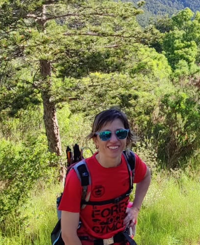

Sobre mi

Soc Mònica Caballer, fisioterapeuta i psicòloga. El contacte amb les persones a través de la fisioteràpia em va portar a interessar-me cada vegada més per les emocions, les relacions i les històries que acompanyen cada procés de salut. Aquesta inquietud va ser el que em va impulsar a estudiar psicologia.
M'interessen especialment els processos de dol i pèrdua, tant els relacionats amb la mort d'un ésser estimat, com aquells que apareixen davant dels canvis en la salut o en les diferents etapes de la vida. També sento un interès especial per l'acompanyament al final de vida. I també, per les relacions entre adolescents i les seves famílies, una etapa plena de canvis, reptes i oportunitats de creixement.
M'agrada crear espais propers, segurs i respectuosos, on cada persona pugui sentir-se escoltada i acompanyada al seu ritme.
Fora de la consulta, soc una persona activa i vinculada a l'esport i a la natura. Entenc el moviment com una font de salut i benestar, i crec que el cos, les emocions i l'entorn formen part d'una mateixa realitat que mereix ser mirada de manera integral.
Comparteixo aquest camí amb la Neu, la meva gossa, que m'acompanya en moltes de les meves activitats a la natura i que m'ha ensenyat el valor de la presència, la paciència i l'atenció al moment present.
Com entenc l'acompanyament terapèutic
Crec en la importància de crear espais on les persones puguin reconnectar amb elles mateixes d'una manera genuïna. Per això, m'interessa especialment incorporar la natura i les experiències quotidianes com a recursos dins del procés psicològic.
En algunes ocasions, les sessions poden desenvolupar-se a l'aire lliure, aprofitant els beneficis que ofereixen els entorns naturals per afavorir la calma, la reflexió i la connexió amb el moment present.
La Neu, la meva companya de quatre potes, també pot estar present en determinades activitats o passejades. Formant part de l'entorn relacional que es crea durant aquestes experiències. La convivència amb ella sovint ens permet observar aspectes com la comunicació, els límits, la paciència, la flexibilitat, l'atenció i la manera com ens relacionem amb allò que no podem controlar.